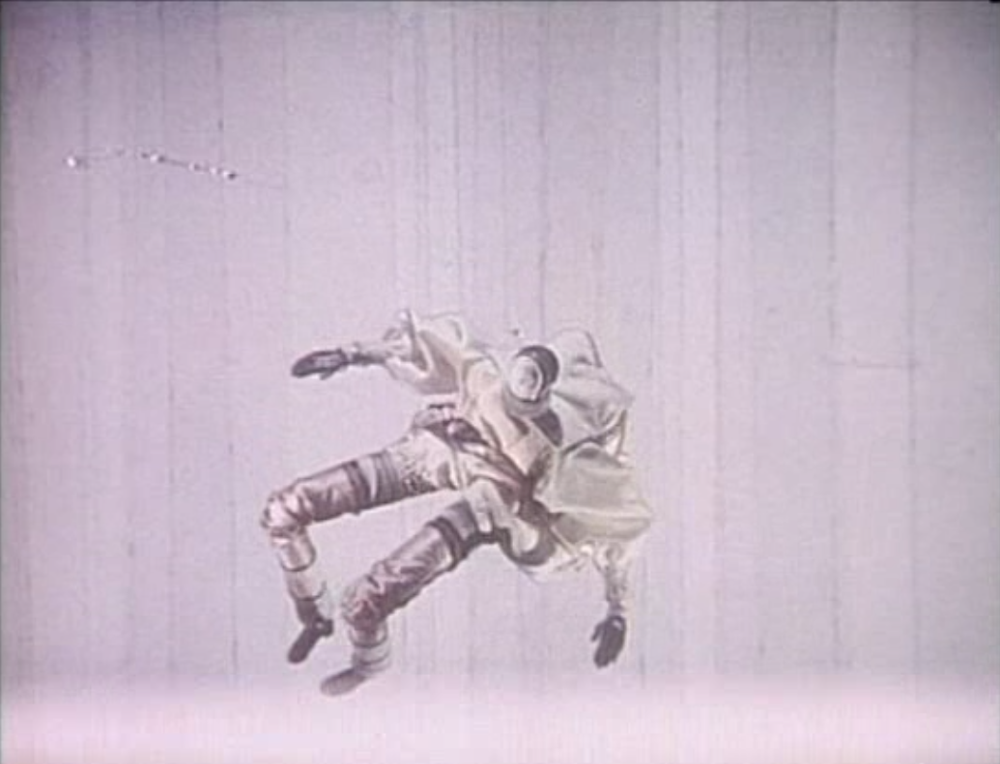

Why is geometry often described as "cold" and "dry"?

Why is geometry often described as “cold” and “dry”? One reason lies in its inability to describe the shape of a cloud, a mountain, a coastline, or a tree. Clouds are not spheres, mountains are not cones, coastlines are not circles, and bark is not...
Ésta es mi mano. Mi sangre brota de ella...
Ésta es mi mano. Puedo moverla. Mi sangre brota de ella. El sol aún está alto en el cielo. Y yo… Yo, Antonius Block… juego ajedrez con el Diablo.
— El séptimo sello, 1957.
Conjuntos de Julia
Tengo un cubo de Rubik bastante maltratado. Después de algunas caídas (sí, soy un poco torpe), afortunadamente el cubo aún no se ha roto, pero el hecho de que algunas calcomanías de colores se hayan despegado y otras estén ya muy dañadas me hizo pensar...
Twelve monkeys
I don’t really come from outer space. […] It is a condition of mental divergence. I find myself on the planet Ogo. Part of an intellectual elite preparing to subjugate the barbarian hordes on Pluto. But even though this is a totally convincing reality...
Recuerdos Sosainas (Souvenirs Fadasses)
PELO (POIL)
El conejo ha perdido el pelo: el que tenía sobre la nariz.
Sus amigos le llamaban “el Velloso” para distinguirlo de los demás conejos.
Desde ahora le llamarán “el Pelado”, designación menos gloriosa.
Su novia no querrá saber nada m...
Chronopolis

Chronopolis, 1982.
Nim
-I suggest we play another game. I know a game I always win.
-If you can’t lose, it is no game.
-I can lose, but I always win.
* *** ***** *******
Last Year at Marienbad, 1961.
How perfectly goddamned delightful it all is, to be sure
“How perfectly goddamned delightful it all is, to be sure”. When I was a kid, if I ever started showing enthusiasm for anything, my brother Charles would say “How perfectly goddamned delightful it all is, to be sure”. Always take the wind out of my...
Tumbolia
The land of dead hiccups and extinguished light bulbs. An eternal waiting room for dissolved snowflakes and characters in stories that aren’t being read. Take a stroll along the shore, all littered with the flotsam of hopes and dreams, and rummage...
Harold and Maude
I like to watch things grow. They… grow and bloom and… fade and die and change into something else. Life!
-I love the feel of soil, don’t you? And the smell. It’s the earth… The earth is my body, my head is in the stars. Who said that?
-I...